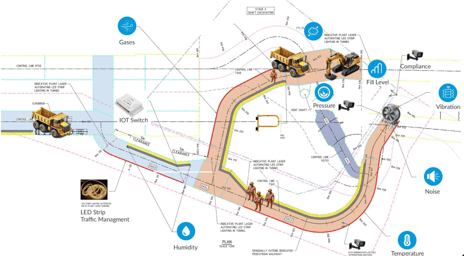
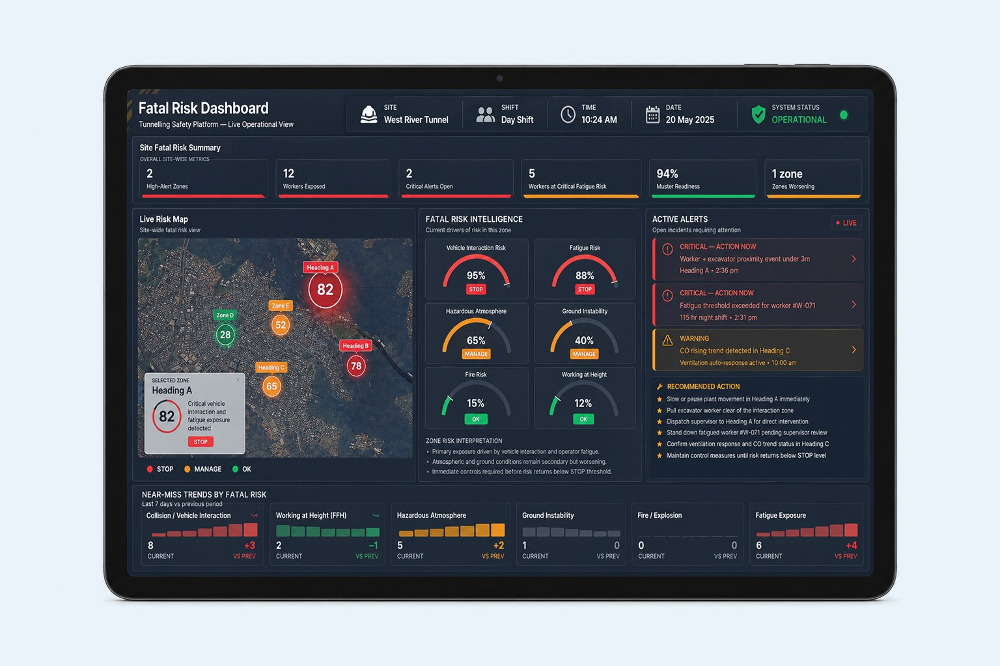
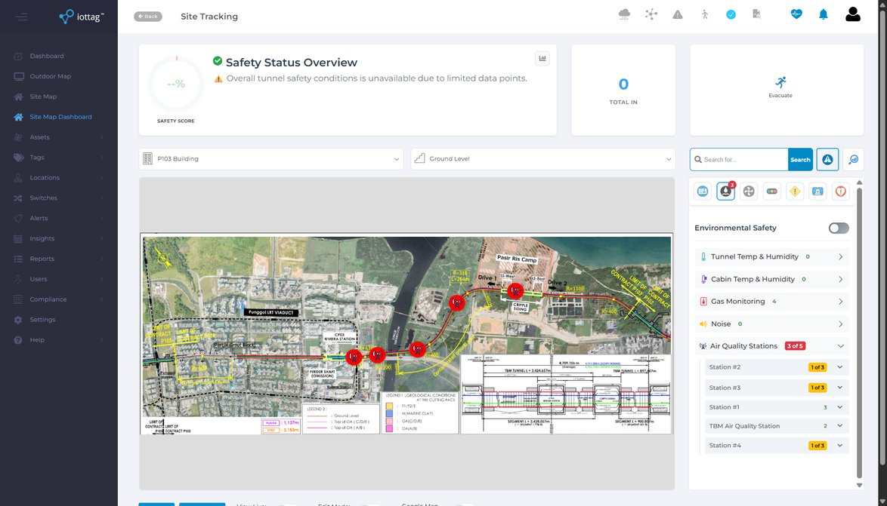
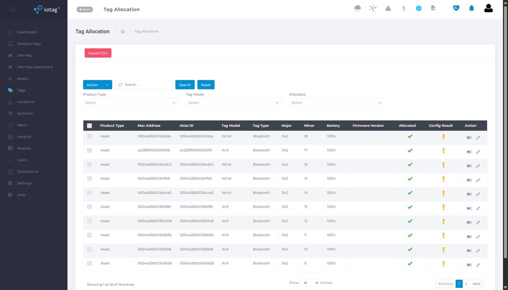
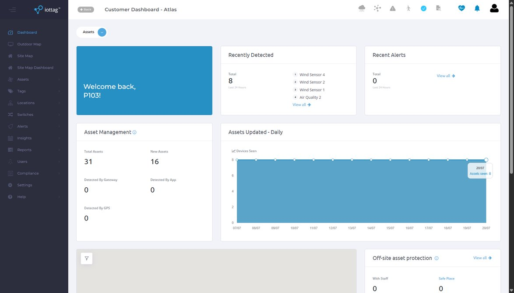

Operational Intelligence
Each System Sees Something.
Atlas Sees the Whole Operation.
Modern operations rely on dozens of specialised systems, each providing only part of the operational picture. Atlas brings this information together to help teams understand what is happening, identify emerging risks and act with confidence.
Every System Contributes Part of the Picture
Operations already rely on specialised systems to monitor people, vehicles, assets, environmental conditions and production activity.
Each system answers a specific operational question. Workforce systems show who is onsite and where they are located.
Fleet systems monitor vehicle movement and traffic conditions. Asset platforms track equipment performance, while environmental and production systems report on changing site conditions and operational output.
Individually, these systems provide valuable visibility. The challenge is that their information is often viewed separately, making it difficult to understand how changes in one area may affect another.
Atlas brings these information sources together so teams can assess the operation as a connected whole rather than as a collection of isolated systems.
Workforce Visibility
Understand who is onsite, where people are located, how workforce activity is changing and whether personnel are entering areas of increased operational exposure.
Fleet and Mobile Equipment
Monitor vehicle movement, traffic interactions, route activity, congestion and the influence of fleet behaviour on safety and production performance.
Assets and Infrastructure
Maintain visibility across equipment, fixed infrastructure, tools and critical assets, including their status, condition, utilisation and relationship to wider operational activity.
Environmental Conditions
Monitor atmospheric conditions, gases, dust, temperature, humidity, noise, weather and other environmental factors that may influence safety or site performance.
Production Activity
Understand the operational conditions influencing schedules, throughput, resource movement, bottlenecks and overall production performance.
Explore Every Dimension of the Operation
A single operational picture can be viewed through the priorities, systems and risks that matter most to each team.
Atlas organises information from across the site into a connected operational environment. Teams can move between workforce, fleet, equipment, environmental, production, safety and automation views while retaining the context of the wider operation.
This makes it possible to investigate a specific operational area without losing sight of the people, assets, conditions and dependencies surrounding it. Instead of moving between disconnected platforms, teams can explore how each part of the operation contributes to safety, productivity, reliability and performance. The result is not simply more data in one place.
It is a structured way to examine the operation from multiple perspectives while maintaining one consistent source of operational truth.
Operational Intelligence Explorer

Understand How One Change Affects the Wider Operation
Operational events rarely occur in isolation. A change in one system can influence people, equipment, environmental conditions, production and risk.
Traditional monitoring systems typically report each event separately: a fan has stopped, airflow has reduced, temperature has increased or gas levels have changed. Each alert may be accurate, but none explains the full operational consequence on its own.
Atlas analyses these events in context. It connects the initial condition with the systems, areas and people that may be affected, helping teams understand how an operational issue is developing across the site.
This allows decision-makers to move beyond isolated alarms and assess the wider cause, consequence and potential exposure before the situation becomes more difficult to control.
Ventilation fan failure
Airflow is reduced
Temperature Increased
Gas concentration rises
Personnel remain downstream
Exposure and disruption increase
Connected Insight
Atlas does not simply report individual events. It reveals how changing conditions influence the wider operation, helping teams assess risk, coordinate a response and act before impacts escalate.
Turn Complex Conditions Into Clear Decisions
Modern operations generate thousands of events, alerts and changing conditions every day. The challenge is identifying which developments matter, how they are connected and where intervention is required.
Atlas evaluates information across people, equipment, environmental conditions, production activity and site systems to create a concise view of the issue and its likely operational significance.
Rather than presenting decision-makers with a collection of disconnected alerts, Atlas helps explain what has changed, why it matters, which areas are affected, what conditions are contributing and where action should be focused.
This allows operators, supervisors, managers and executives to assess developing situations more quickly, apply specialist knowledge more effectively and coordinate action with greater confidence.
This helps operational teams, supervisors, management and executive stakeholders quickly understand changing conditions without requiring specialist interpretation.
Example Intelligence Summary
Ventilation Failure — Zone 4
- The primary ventilation system in Zone 4 has stopped operating.
- Airflow has reduced across the affected area.
- Environmental sensors indicate increasing temperature and gas concentrations downstream.
- Twenty-three personnel remain within connected work areas.
- Vehicle activity is continuing through adjacent haul routes.
- Current conditions indicate increasing workforce exposure and potential production disruption if ventilation is not restored.
Recommended Response
- Dispatch maintenance personnel to inspect the ventilation system.
- Notify supervisors responsible for Zone 4 and connected downstream areas.
- Review current workforce locations and adjust deployment where required.
- Restrict access to affected areas until environmental conditions stabilise.
- Monitor gas, temperature and airflow conditions during the response.
- Escalate the event if environmental thresholds continue to deteriorate.
One Source of Intelligence.
Better Decisions at Every Level.
Atlas creates a consistent foundation for decision-making across the organisation while presenting each team with the information, priorities and level of detail relevant to its role.
Frontline teams need immediate visibility of active conditions and emerging risks. Supervisors need to coordinate people, equipment and work areas. Managers need to understand performance, exceptions and developing constraints. Executives and asset owners require a broader view of risk, production, reliability and portfolio performance.
Atlas supports each of these requirements through role-relevant dashboards and operational summaries built from the same connected information. This helps reduce conflicting interpretations, improves coordination between teams and creates greater confidence in decisions made across the organisation.




Operations
Immediate Situational Awareness
See active conditions, alerts, workforce locations, equipment activity and site priorities relevant to the current shift.
Supervisors
Coordinated Operational Response
Understand how changing conditions affect people, equipment and work areas so activities and resources can be coordinated effectively.
Managers
Performance and Exception Management
Identify emerging risks, production constraints, operational deviations and performance trends requiring management attention.
Executives
Enterprise and Portfolio Oversight
Maintain visibility across operational performance, material risks, major events and business priorities across one or multiple sites.
Asset Owner
Risk, Reliability and Long-Term Value
Understand asset health, utilisation, operational exposure and the conditions influencing long-term performance and investment decisions.
See Your Entire Operation More Clearly
Better decisions begin with a complete understanding of what is happening across people, equipment, assets, environmental conditions and production.
Discover how Atlas brings operational information together, reveals the relationships that matter and helps teams identify risks, coordinate action and make better decisions across the organisation.